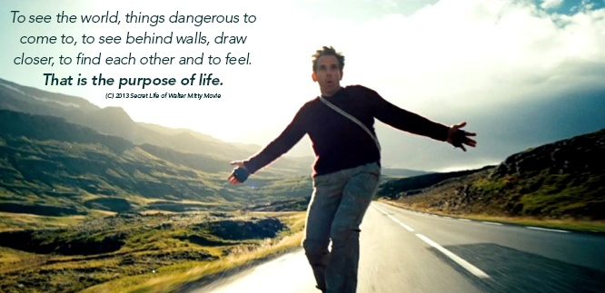

Sometimes there comes an inflection point where you have to make a great leap of faith.
I can still remember that morning back in 2008, when I woke up in Shymkent, Khazakastan. I was feeling undecided about taking up Bernhard and Franzikas' offer the night before to go visit them in Europe or just turning around and heading back home to Singapore overland. I was down to just USD3,000 in my bank account at that point. Shymkent was about the half way mark if you were planning to travel overland from Asia to Europe.
Sitting in the cafe sipping my coffee, I saw then the only other backpacker I have seen during this entire period, other than the pack I was with, walking through the door.
I soon realized after a quick chat he was heading in the direction of Asia overland. He had maps for territories westwards and I for those eastwards. After brief moment of deliberation I exchanged maps with him.
2008 was a period before smart phones and Google maps existed, giving up the map eastwards was like shutting the door to retreat back to Asia if I decided at any point to abort. You could imagine how frightening that experience was.
24 hours later in Astana, I saw broadcast over the news that severe riots had finally broke out after months of tension in the western region of China. The path back eastwards overland was closed and nailed shut. I guess I had no choice but to fully committed at that point. Strangely, with total clarity of purpose brought about a profound sense of calm.
Three months later after experiencing an actual deport, crashing at a few friends' place and sleeping in the streets on multiple occasions I arrived in London UK, accomplishing my overland trip from Asia to Europe. And it was at the height of the 2008 financial crisis... Oh boy...
And that was definitely not the only inflection point I have experienced. In hindsight, inflection points tends to force you to either fully and totally commit to whatever your pursuits are or give up. The process catalyzes a one way change. It require a great deal of faith. Successful navigation of such events brings along with it total clarity of purpose until the next inflection point.
I guess part of the reason I founded GetData.IO was to provide people with a simple and affordable way to get the data they need so as to navigate those inflection points that life inevitably throw at them. To help them make that decision they know they need to make and to have that peace of mind when the decision is finally made.